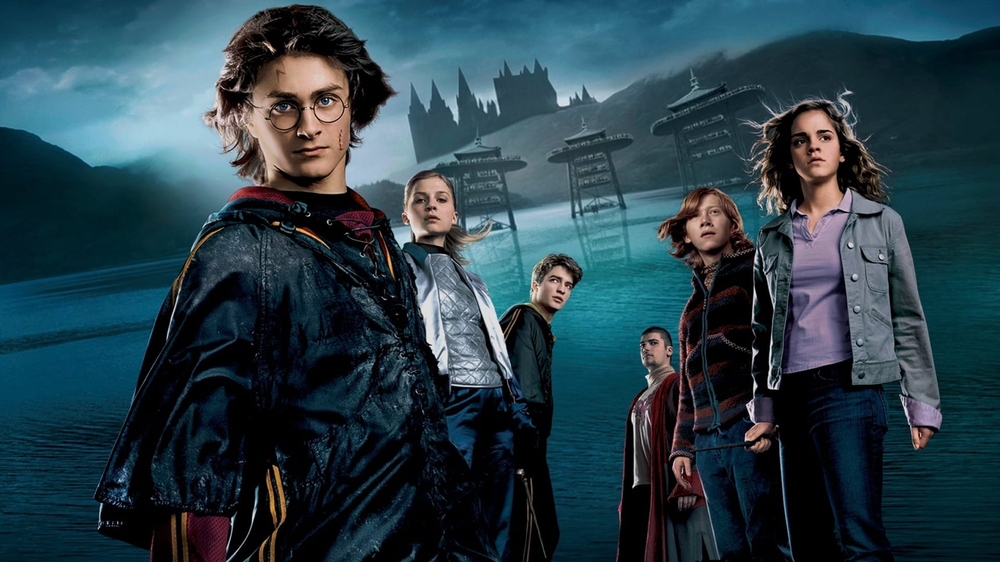
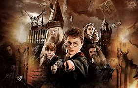
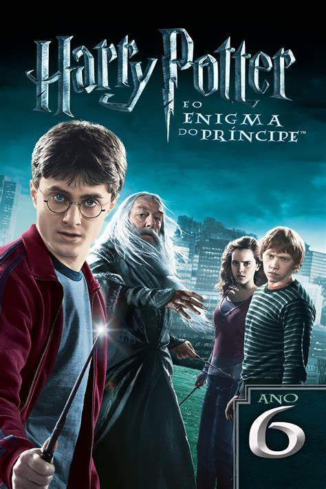

Harry Potter Series
1 Harry Potter and the Philosopher's Stone( the Sorcerer's Stone)
In Harry Potter and the Philosopher's Stone, we meet Harry, a young boy who learns he is a wizard on his eleventh birthday. After a life of neglect with his aunt and uncle, Harry discovers a hidden world of magic as he is invited to Hogwarts School of Witchcraft and Wizardry. Here, he meets new friends Hermione Granger and Ron Weasley and encounters magical creatures and challenging classes. The trio soon discovers the existence of a magical object called the Philosopher's Stone, which grants immortality, and uncovers a plot involving Lord Voldemort, a dark wizard who once tried to kill Harry as a baby.
2 Harry Potter and the Chamber of Secrets
In Harry Potter and the Chamber of Secrets, Harry returns to Hogwarts for his second year, only to find the school plagued by mysterious attacks. Whispers of the "Heir of Slytherin" and a mythical "Chamber of Secrets" fill the halls. Harry, Hermione, and Ron set out to solve the mystery, eventually uncovering a hidden chamber beneath the school and an ancient creature—the Basilisk—terrorizing students. Harry also learns more about Tom Riddle, the young version of Voldemort, and ultimately faces him in the Chamber to save his friends and the school.
3 Harry Potter and the Prisoner of Azkaban

Harry Potter and the Prisoner of Azkaban follows Harry in his third year at Hogwarts, where he learns of Sirius Black, an infamous prisoner who has escaped from Azkaban and seems to be targeting Harry. Under the shadow of the dementors, terrifying guards of Azkaban, Harry learns about his own family history and Sirius Black's surprising connection to it. With the help of his friends and the mysterious professor Remus Lupin, Harry unearths long-hidden secrets about his parents and their allies. In a twist, he discovers that Sirius is not his enemy, but one of his father’s closest friends and a wrongly-accused prisoner.
4 Harry Potter and the Goblet of Fire
In his fourth year, Harry unexpectedly finds himself entered in the dangerous Triwizard Tournament, competing against older students from other wizarding schools. The tournament brings new friendships, shocking revelations, and ends in tragedy as Voldemort returns to full power.
5 Harry Potter and the order of the
In his fifth year, Harry faces opposition as the magical community refuses to believe Voldemort has returned. He secretly trains students to defend themselves against dark forces, creating “Dumbledore’s Army.” A battle in the Ministry of Magic leads to devastating losses, but confirms Voldemort’s return.
6 Harry Potter and the Half-Blood Prince
Harry uncovers secrets about Voldemort’s past with the help of his mentor, Professor Dumbledore. Together, they learn of Horcruxes, objects containing fragments of Voldemort’s soul. As Voldemort’s power grows, Harry prepares for the final battle, while tragedy strikes, leaving Hogwarts and the wizarding world more vulnerable than ever..
7 Harry Potter and the Deathly Hallows part 1 and 2

Harry, Ron, and Hermione leave Hogwarts to hunt Voldemort’s Horcruxes, facing dangers and uncovering the mysterious Deathly Hallows and In the epic final battle at Hogwarts, Harry and his friends confront Voldemort, bringing the series to a powerful conclusion.Each film follows Harry’s journey from a young, curious wizard to a hero fighting against the forces of darkness, culminating in a legendary battle for the wizarding world.